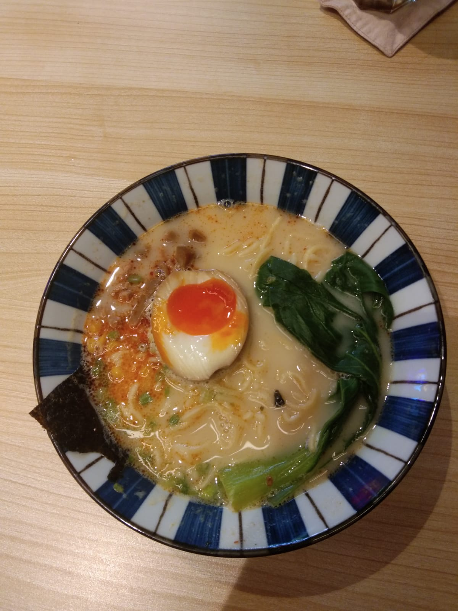
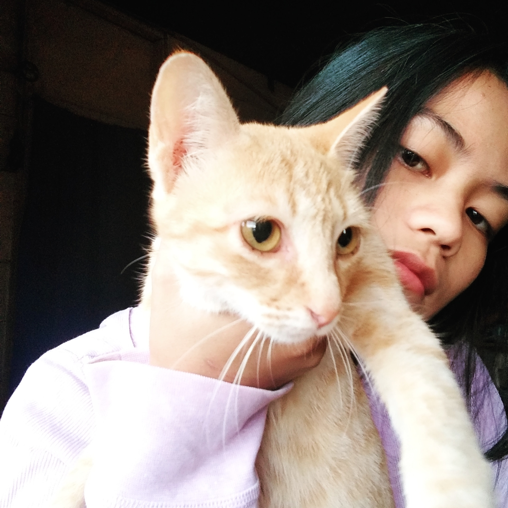
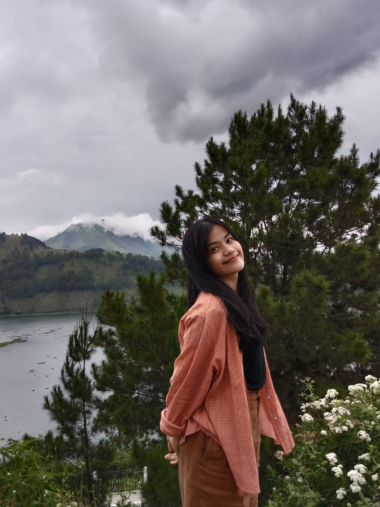

| 
Hobby saya memasak, tidak banyak sih masakan yang bisa saya masak.
Tetapi tidak perlu khawatir soal masak makanan Batak saya cukup pandai wkwkwk...
Saya suka bereksperimen tentang makanan.. :)
Walaupun terkadang gagal... hahaha :0
|
Hobby lain saya yaitu menonton. Saya suka menonton movie,kartun,drama
Kebanyakan genre film yang saya tonton adalah genre horor, action,dan misteri.
Tetapi saya tidak menyukai film yang terlalu banyak menampilkan darah.
Terkadang saya menonton film romance... kalau saya ingin menonton yang ringan.. :)
|

Terkadang saya suka baca buku, tetapi lebih sering baca wattpad.. wkwkwk
Membaca sangat penting dalam menambah wawasan kita,banyak hal yang ingin aku baca tetapi sering membaca membuat mata
saya perih dan berair :)
hehehe
|

Pangururan adalah kota yang terletak di pulau Samosir
Samosir dikenal sebagai negeri indah kepingan surga, karena di Samosir banyak sekali tempat wisata yang sangat indah..
Apakah kalian pernah berkunjung ke Samosir? Jika belum, saya menyarankan untuk berkunjung
Aapalagi kalau banyak pikiran atau suntuk, boleh banget kesini karena mata kalian akan dimanjakan
oleh pemandangan yang sangat indah, dan banyak makanan khas batak yang sangat enak.
|

Saya juga seorang pecinta hewan yaitu kucing dan anjing.
Dikampung kami memelihara kucing dan anjing secara bersamaan, saya memiliki kucing sebanyak 3 dengan warna yang sama,
dan 1 anjing yang bernama "LEGO" yang sangat garang dengan orang yang tidak dikenal.
Di Medan ini, saya mau pelihara kucing tapi tidak diperbolehkan kakak saya.. huhuhu :(
sedih...
|

Ini adalah foto di salah satu tempat wisata di samosir yaitu Bukit Sibea-bea
Pemandangan dari atas bukitnya sangat indah sekali, banyak yang berkunjung kesini walaupun belum selesai dibangun
Dari sini juga satu arah ke Bukit Holbung dan Air Terjun Efrata.
Jika kalian ingin kesini pastikan kalian tidak takut terken sinar matahari hahaha....
Dan jangan lupa ajak saya.. hehehe
|